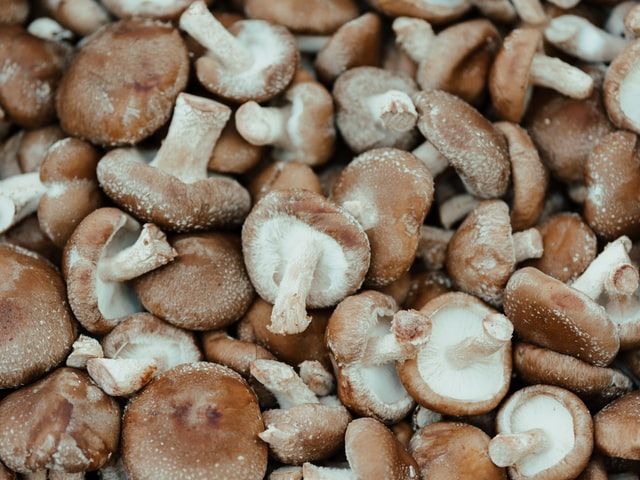

Shitake Dashi

Photo by Kier In Sight on Unsplash.
Description
Dashi (出汁, だし) is a family of stocks used in Japanese cuisine. Dashi forms the base for miso soup, clear broth soup, noodle broth soup, and many simmering liquids to accentuate the savory flavor known as umami. Dashi is also mixed into the flour base of some grilled foods like okonomiyaki and takoyaki.
Shiitake dashi is made by soaking dried shiitake mushrooms in water. Dried shiitake is preferred over fresh due to a stronger presence of savory or umami flavors.
Source
Ingredients
- 6 dried shitake mushrooms
- 4 cups water
Steps
- Place the water in a pot and soak the mushrooms at room temperature for at least 30 minutes, or in the refrigerator overnight.
- Remove the mushrooms one at a time, squeezing any liquid back into the pot. Discard or save the rehydrated mushrooms for another dish.
- Place the pot on high heat and bring to a boil.
- Allow the dashi to cool, and then strain to remove any solids. The resulting dashi stock can be stored in the refrigerator or used immediately.
Return to recipes